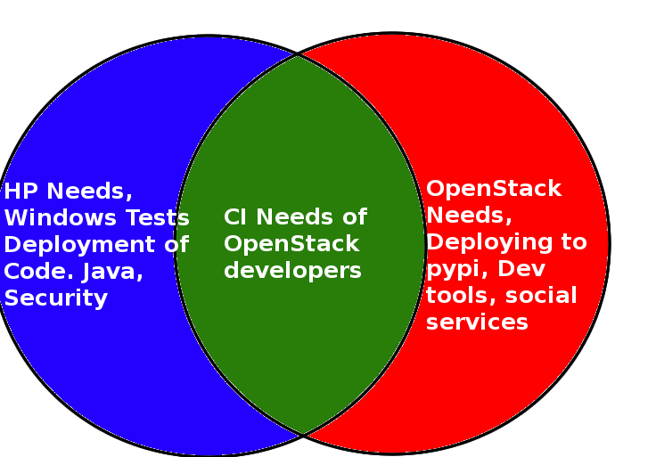

Consuming Open Source Infrastructure
Who am I?
- Work at HP
- Open Source: OpenStack and Puppet
- Build/Run the new ci system inside hp
- Copy of upstream openstack CI
Consuming Open Source Infrastructure
- Not Trivial
- Target Audience
- "what we're doing"
- Takeaways
Define Terms
- Open Source
- Infrastructure
- Consuming
Consuming Open Source Infrastructure
Configuration Management
# Node-OS: trusty
node 'kdc01.openstack.org' {
class { 'openstack_project::kdc':
sysadmins => hiera('sysadmins', []),
}
}
# Node-OS: trusty
node 'kdc02.openstack.org' {
class { 'openstack_project::kdc':
sysadmins => hiera('sysadmins', []),
slave => true,
}
}
Define Terms
- Open Source
- Infrastructure
- Consuming
- Upstream
- Downstream
Examples:
- OpenStack CI Infra
- Mozilla Infra
- Jenkins Infra
- WikiMedia Infra
Takeaway
We benefit from consuming the infrastructure because we don't have to do all the work ourselves.
Takeaway
We benefit from consuming the infrastructure because we have confidence that the architecture is viable.
Takeaway
We benefit from consuming the infrastructure because we don't have to do all the work ourselves.
Any departures you take from upstream is technical debt.
Gozer and the Ghostbusters
- Our project at HP is called gozer
- Our team is called the ghostbusters
- We consume openstack ci's infrastructure
What problem are we solving
- Upstream
- CI needs of openstack developers
- Downstream
- CI needs of hp openstack developers
What problem are we solving?
- Upstream
- CI needs of openstack developers
- Publishing of packages to pypi
- Development needs
- Bug tracking
- Voting/arbitration/governance infra
- Social Infra
- Downstream
- CI needs of hp openstack developers
- CI/CD needs of random hp developers
What problem are we solving?

Takeaway
For Downstreams: Identify early which components you wish to replicate.
Takeaway
For Upstreams: Decouple components from each other.
Context Matters
- Upstream uses 2 openstack clouds
- Downstream uses 1 openstack cloud, 2 HP DCs
Upstream contribution
- Downstreams must contribute upstream
- Practical
- Social
Upstream contribution
<% if @http_proxy -%>
export http_proxy=<%= @http_proxy %>
export HTTP_PROXY=<%= @http_proxy %>
<% end -%>
<% if @https_proxy -%>
export https_proxy=<%= @https_proxy %>
export HTTPS_PROXY=<%= @https_proxy %>
<% end -%>
<% if @no_proxy -%>
export no_proxy=<%= @no_proxy %>
<% end -%>
Upstream contribution
- Downstreams must contribute upstream
- Practical
- Social
Upstream contribution
- Downstreams must contribute upstream
- Practical
- Social
- Testing
- Code
- Reviews
- User Support
- Docs
Takeaway
Context matters.
Takeaway
Context matters.
Requirements to start
- You need a cloud: our tool is built in top of OpenStack
- A service account for your CI systems into that cloud(s)
- Optional: service account for Jenkins nodes
- Puppet is hostname based: a domain for your servers
- A git repository to store your code
CI system overview
- Full code on: https://git.openstack.org/openstack-infra/system-config
- Based on puppet
- Need a puppet master and puppet nodes for each service
- Minimal services needed: ci-puppetmaster, gerrit, jenkins,
nodepool, zuul, and specific slaves
- Using hiera puppet module to store configuration values: keys, certificates...
How to adapt system to your project
- manifests/site.pp: update domains for your servers there
node 'review.openstack.org' {
class { 'openstack_project::review':
github_oauth_token => hiera('gerrit_github_token', 'XXX'),
github_project_username => hiera('github_project_username', 'username'),
github_project_password => hiera('github_project_password', 'XXX'),
...
- https://git.openstack.org/cgit/openstack-infra/project-config:
defines the shape of servers, rename it and adapt to your needs
Bootstrapping
- Install a puppetmaster, replace openstack_project with your own name:
sudo su -
git clone https://git.openstack.org/openstack-infra/system-config /opt/system-config/production
/opt/system-config/production/install_puppet.sh
apt-get install puppetmaster-passenger hiera hiera-puppet
bash /opt/system-config/production/install_modules.sh
echo $REAL_HOSTNAME > /etc/hostname
service hostname restart
puppet apply --modulepath='/opt/system-config/production/modules:/etc/puppet/modules'
-e 'include openstack_project::puppetmaster'
- Bring up puppetboard
- Update hiera files according to your needs
- Add nodes for each of the services you are going to use
Configure gerrit
- Is our code review system
- List of projects and ACL for each project needs to be configured
- Can choose authentication type (LDAP, SSO)...
- Needs custom keys and certificates
- Can customize look & feel: logo, css
- CLA files needs to be adapted: are OpenStack specific
- Node needs at least 10gb to run
Configure zuul
- Is the scheduler in the OpenStack CI system
- Configuration relies on zuul project-config:zuul/layout.yaml file:
- pipelines:
- name: check
manager: IndependentPipelineManager
source: gerrit
trigger:
gerrit:
- event: patchset-created
success:
verified: 1
failure:
verified: -1
- projects:
projects:
- name: example/project
check:
- project-merge:
- project-unittest
- Need 1GB node to run
Configure Jenkins Master(s)
- Only one master needed, but multi-master is recommended
- Configuration of jobs done using jenkins job builder, relying on project-config:jenkins/jobs:
- macros:
- builder:
name: make-test
builders:
- shell: 'make test'
- job templates:
- job-template:
name: '{name}-unit-tests'
builders:
- make-test
- projects:
- project:
name: project-name
jobs:
- '{name}-unit-tests'
- Launch the node with a size larger than specified in jenkins.default
Main problems, improvements
- System not automated 100%, needs manual configuration
- Initial deployment and learning curve can be complicated
- Main engine is still related with Openstack configuration: gradual steps to separate it
- Trying to isolate all project-depending settings into openstack-project folder
- Some configurations hardcoded, moving to make every setting configurable
Development / Contributing